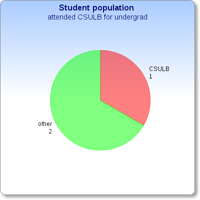
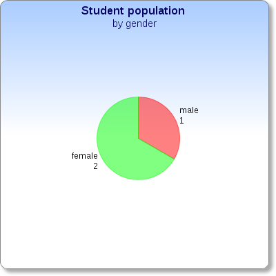
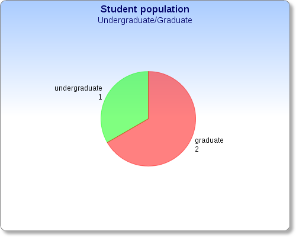

Welcome to Student Profiles. Here you can find the information about users educational history! You can also read the latest added profiles or find the individuals using site index.
| Name | Community College | Undergraduate | Graduate | Other Education |
|---|---|---|---|---|
| Morales, Maria | N/A | CSU-Long Beach | N/A | N/A |
| Pammi, Elizabeth | N/A | Bharat Institute of Engineering & Technology | CSU-Long Beach | N/A |
| White, Kameron | Glendale | UNC-Chapel Hill | CSU-Long Beach | N/A |
Here are some statistics about the members who use Student Profiles:
  